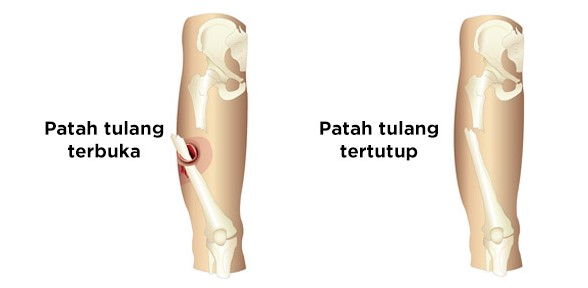

Kelainan Sistem Gerak : Gangguan Pada Tulang
Gangguan Pada Tulang : Uraian Materi
Kelainan pada tulang merupakan suatu kondisi yang tidak biasa pada tulang. Kelainan pada tulang ini menyebabkan berubahnya bentuk struktur pada tulang. Banyak orang yang mengidap kelainan pada tulang terhambat aktifitas hariannya. Dengan kelainan tulang para pengidap memiliki pergerakan yang lebih terbatas dibandingkan dengan mereka yang tidak mengidap kelainan tulang. Beberapa kelainan dan gangguan pada tulang antara lain :
- Retak tulang (fisura) merupakan retaknya tulang pipa, disebabkan karena kecelakaan .
- Patah Tulang (faktura) disebabkan karena kecelakaan, patah tulang dibedakan atas :
- Patah tulang terbuka, apabila patahnya tulang sampai menembus otot dan kulit.
- Patah tulang tertutup, apabila patahnya tulang tidak sampai menembus otot dan kulit.
- Polio merupakan penyakit dimana keadaan tulang menjadi lumpuh layuh karena infeksi virus polio.
- Sipilis merupakan penyakit dimana keadaan tulang menjadi lumpuh layuh karena infeksi bakteri Treponema pallidum
- Layuh Sendi merupakan keadaan tulang yang tidak berdaya karena kerusakan pada discus epifise.
- Kelainan pada tulang belakang merupakan kelainan dimana tulang belakang bengkok akibat kebiasaan sikap duduk yang salah. Kelainan atau bengkoknya tulang belakang dibedakan 3 macam, yaitu:
- Skilosis, merupakan tulang belakang yang bengkok ke kanan atau ke kiri.
- Kiforis, merupakan tulang belakang yang bengkok ke belakang (bongkok).
- Lordosis, merupakan tulang belakang yang bengkok ke depan.
- Subluksasi, merupakan gangguan yang terjadi pada daerah vertebra leher sehingga posisi kepala mengalami perubahan menjadi ke arah kiri atau ke kanan.
- Osteoporosis yaitu keadaan tulang yang rapuh dan dapat patah
- Nekrosa yaitu matinya sel-sel tulang yang disebabkan oleh kerusakan periosteumyang bertugas membangun sel tulang.
- Osteomalasia yaitu terjadinya kelambatan proses osifikas pada saat bayi. Jika telah dawasa biasanya akan menimbulkan pembentukan kaki yang bertipe O atau X.
- Rachitis merupakan penyakit tulang, di mana tulang kurang keras karena kekurangan vitamin D. Akibat rakhitis adalah tulang kaki (tibia dan fibula) menjadi bengkok sehingga tampak membentuk huruf O atau X. Rakhitis dapat pula menyebabkan penyakit dada mertapi, yaitu batang tulang belakang memendek.
- Microsefalus yaitu kepala kecil, karena pertumbuhan tulang tengkorak terhambat akibat kurangnya zat kapur saat pembentukan tulang tengkorak pada waktu bayi. Akibat lebih lanjut dapat berdampak pada gangguan mental.
- TBC Tulang akibat pengaruh penyakit TBC atau tumor ganas, sehingga tulang jadi rusak dan membusuk.

Mari Mencoba
 apabila jawaban benar
apabila jawaban benar  apabila jawaban salah
apabila jawaban salah Kebiasaan duduk miring ke kiri atau ke kanan pada anak yang masih dalam masa pertumbuhan dapat menyebabkan…